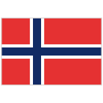

| Rang | Pays | Nom | Altitude | Description | Dernier passage |
|---|---|---|---|---|---|
| 1 | Italy | Antholz-Anterselva | 1626m | Niché au coeur des Alpes italiennes, le plus haut site (en termes d'altitude) de la saison propose une piste variée, présentant des montées longues, des pentes plus raides mes courtes, de belles descentes permettant aux athlètes de récupérer, et un pas de tir difficile, sur lequel on arrive en montant. En prime : une vue à couper le souffle, et une fan zone en forme de coeur | 2026-02-22 (Olympics) |
| 2 | France | Le Grand Bornand | 930m | L'un des stade les plus hauts de la saison, bien que plus bas que celui d'Anthloz. Souvent théâtre de la première mass-start de la saison, la seule étape française accueille les biathlètes dans une ambiance chaleureuse au coeur de la station du Grand Bornand, et la ferveur des supporters français, presque sans égale, s'y fait ressentir | 2025-12-21 |
| 3 | Germany | Ruhpolding | 713m | "La mecque du biathlon". Souvent précédée de sa jumelle à Oberhof, l'étape de Ruhpolding est un incontournable de la saison, et certainement l'étape dont le public possède la meilleure ferveur de la saison | 2026-01-18 |
| 4 |  Norway |
Oslo Holmenkollen | 325m | Le stade d'Oslo est chaque saison le théâtre de la dernière étape, et offre régulièrement un final de haut vol, avec le dénouement de la lutte pour le globe de cristal. La vue sur le tremplin de saut à ski est emblématique de ce site, qui compte parmi ses invités le roi de Norvège, qui vient chaque saison féliciter les athlètes norvégiens pour leur saison particulièrement réussie (il faut dire qu'ils ne se ratent jamais, c'est usant) | 2025-03-23 |